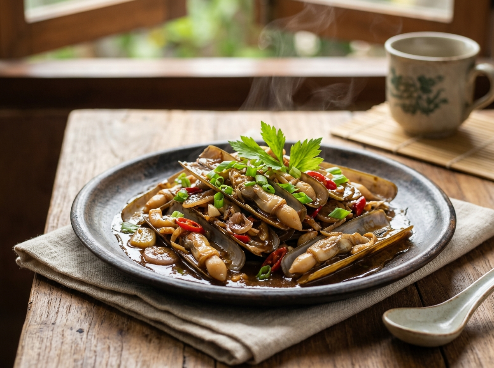
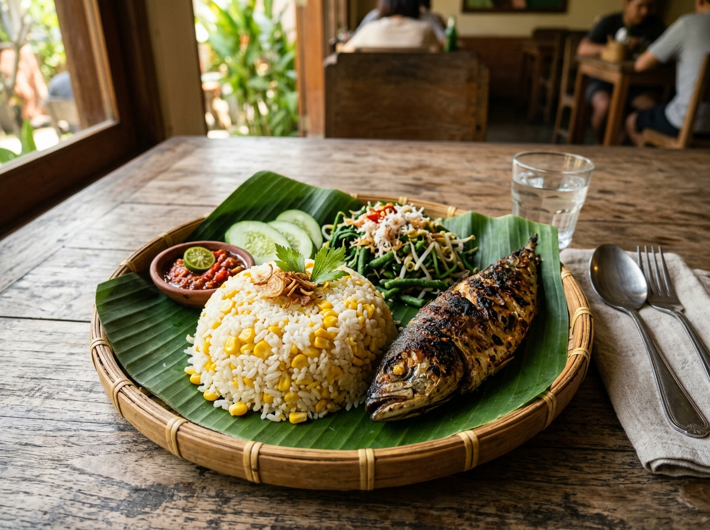
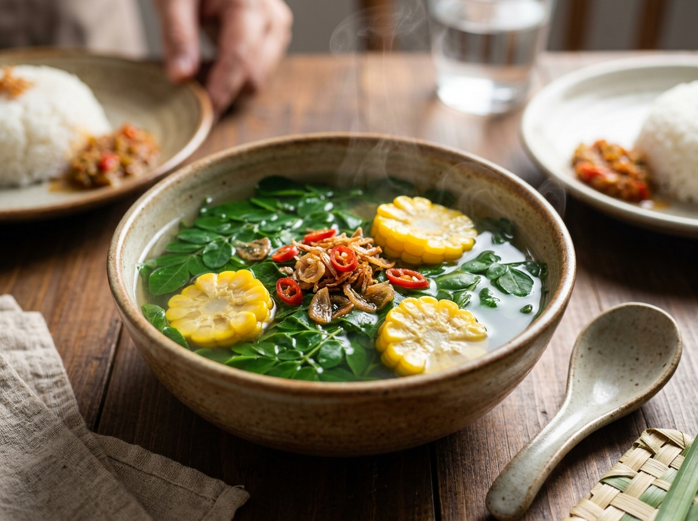

Beranda
Kehamilan sehat dimulai dari kebiasaan kecil setiap hari.
Pastikan Bunda minum Tablet Tambah Darah (TTD) malam ini dengan air putih atau air jeruk agar tidak anemia ya!
Agenda Sehat Hari Ini
Pengingat Berikutnya
Pantau Gerakan Janin
Inspirasi Gizi Lokal Madura
Bahan makanan kaya zat besi & protein untuk pencegahan stunting
Lorjuk Madura
Kerang bambu khas pesisir Madura. Kaya zat besi, zinc, dan protein tinggi pembentuk sel otak janin.

Nasi Jagung Madura
Karbohidrat kompleks kaya serat pangan alami untuk mengontrol gula darah dan melancarkan pencernaan.

Sayur Daun Kelor (Maronggheh)
Superfood tradisi Madura dengan 3x zat besi bayam dan kalsium tinggi untuk pembentukan tulang janin.
Pengingat Rutinitas Bunda
Katalog Gizi Lokal Khas Madura
Jadwal Pemeriksaan Kehamilan (ANC)
Catatan Medis Terakhir (Buku KIA)
Kalkulator & Alat Pendamping Kehamilan
📅 Hitung HPL (Naegele)
Tentukan perkiraan tanggal lahir berdasarkan Hari Pertama Haid Terakhir (HPHT).
⚖️ Kenaikan BB Ideal
Panduan kenaikan berat badan sehat selama kehamilan berdasarkan IMT pra-hamil.
👣 Penghitung Gerakan (Kick)
Catat 10 gerakan janin dalam sesi 2 jam untuk memastikan kesejahteraan si kecil.
🚨 Skrining Mandiri Tanda Bahaya Kehamilan
Segera periksakan diri ke Puskesmas atau RS terdekat jika Bunda mengalami salah satu dari gejala berikut:
Bunda Fitri
Ibu Hamil · Usia 26 Tahun · Kabupaten Bangkalan
Edit Data Lengkap Kehamilan
Perbarui usia kehamilan, tanggal HPHT, riwayat kelahiran, dan alamat faskes.
Riwayat & Rencana Pemeriksaan ANC
Kelola jadwal USG, imunisasi TT, dan catatan laboratorium.
Cetak / Simpan Kartu Digital KIA
Cetak kartu kehamilan untuk dibawa saat periksa ke faskes atau bidan desa.
Pengaturan Notifikasi & Waktu Alarm
Atur bunyi pengingat TTD, jadwal sarapan, dan hidrasi air minum.
Data Kehamilan & Personal Bunda
Pengaturan Notifikasi & Preferensi
Alarm harian malam hari agar patuh minum TTD demi mencegah anemia dan stunting.
Pemberitahuan 3 hari dan 1 hari sebelum jadwal kontrol ke bidan atau dokter.
Notifikasi berkala setiap 2 jam untuk minum satu gelas air putih.
Rekomendasi masakan sehat khas Madura setiap pagi pukul 07.00 WIB.
Bunyi nada lembut yang menenangkan saat menyelesaikan tugas atau pengingat.
Pusat Bantuan & Kontak Medis Madura
Kontak Darurat & Faskes Rujukan Madura
Hubungi fasilitas kesehatan terdekat jika terjadi tanda bahaya kehamilanTentang Inisiatif MOMP CARE
MOMP CARE adalah platform pendamping digital kehamilan yang dirancang khusus untuk mendampingi para calon ibu di wilayah Madura dan sekitarnya. Aplikasi ini mengintegrasikan pedoman medis nasional (Kemenkes RI) dengan kearifan pangan lokal Madura seperti Lorjuk, Maronggheh (daun kelor), dan Nasi Jagung guna menurunkan prevalensi anemia pada ibu hamil dan mencegah stunting sejak 1.000 Hari Pertama Kehidupan (HPK).
Pemberdayaan Berbasis Kearifan Lokal
Mengoptimalkan potensi sumber daya gizi pesisir Madura yang melimpah, lezat, dan terjangkau.
Privasi & Keamanan Data Bunda
Seluruh data kehamilan tersimpan aman secara privat di perangkat Anda tanpa pelacakan pihak ketiga.
Dukungan Komunitas & Tenaga Kesehatan
Bersinergi bersama Bidan Desa, Kader Posyandu, dan Puskesmas setempat.